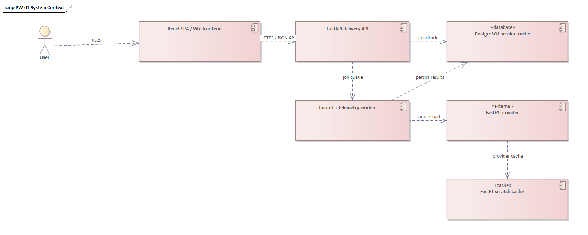
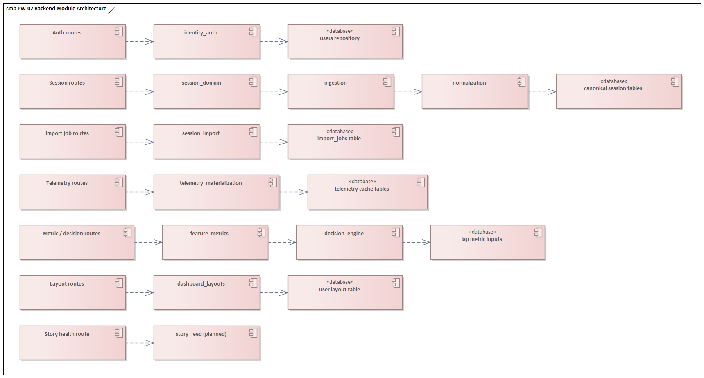
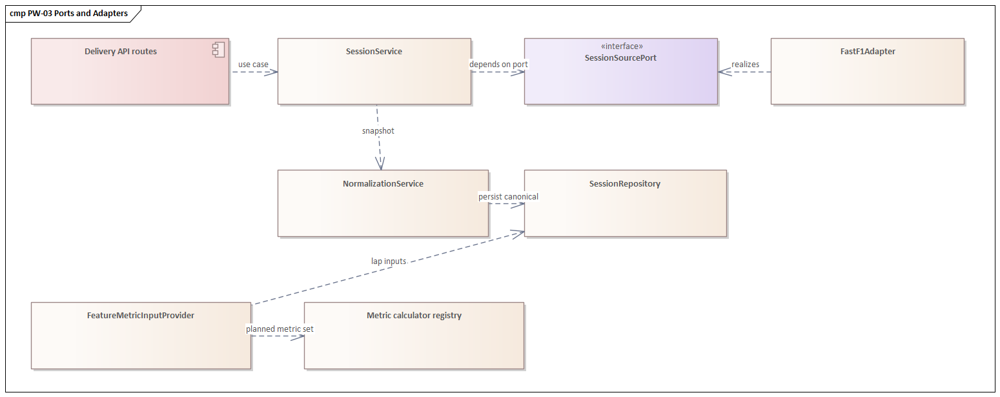
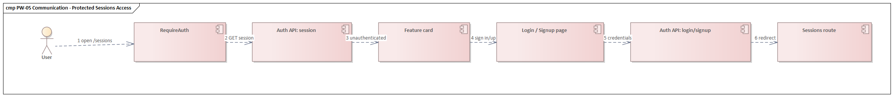
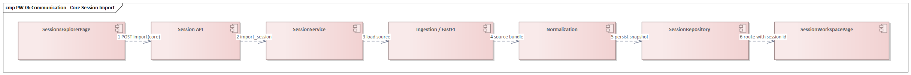
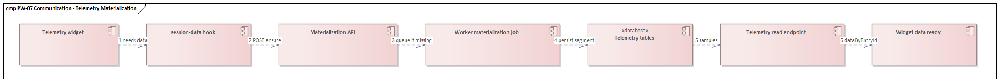
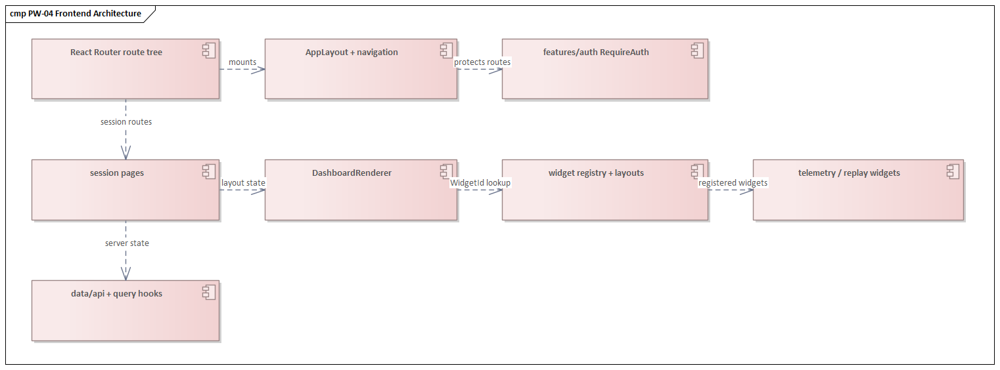

PitWall-Insights
Formula-1 session lookback, replay és későbbi live-race elemző webalkalmazás jelenlegi architektúrája, moduljai, adatfolyamai, port/adaptor kialakítása, API- és UI-döntései.
Tartalom
- Dokumentációs cél és tartalom
- Projekt áttekintés
- Mi működő funkció, és mi skeleton?
- Rendszerarchitektúra
- Backend modularchitektúra
- Portok, adapterek és modulhatárok
- Kommunikációs folyamatok
- Adatmodell és perzisztencia
- API route-ok
- Frontend architektúra és route-ok
- UI design döntések
- Autentikáció és hozzáférés-védelem
- Minőség, tesztelés, futtatás
- Korlátok és további feladatok
- MI eszközhasználat megjegyzés
1. Dokumentációs cél és tartalom
A dokumentum fejlesztői átadási és karbantartási kiindulópont. A projekt aktuális állapotát foglalja össze: architektúra, projektstruktúra, működő és skeleton funkciók, API- és frontend route-ok, UI-döntések, adatfolyamok, port/adaptor határok és a legfontosabb UML diagramok.
A cél, hogy egy új fejlesztő gyorsan átlássa, hol vannak a stabil részek, hol vannak tervezett modulok, és mely technikai döntések határozzák meg a további fejlesztést.
2. Projekt áttekintés
A PitWall-Insights motorsport-adatokra épülő webapp. A fő irány: Formula-1 session kiválasztása, importja, normalizálása, majd lookback/replay elemzése. Nem általános data lake; a rendszer egy kiválasztott session köré szerveződik.
- FastAPI backend
- PostgreSQL + SQLAlchemy + Alembic
- FastF1 külső adatforrás
- React 19 + React Router 7 frontend
- TanStack Query + Axios adatkezelés
- Vite + TypeScript + Tailwind v4/CSS
- Felhasználó belép vagy regisztrál.
- Session Explorerben szezont és hétvégét választ.
- A backend FastF1-ből betölti a session core adatait.
- A frontend workspace megnyílik lookback vagy simulation módban.
- A widgetek igény szerint kérik a nehezebb telemetry szeleteket.
Repo szintű szerkezet
| Útvonal | Szerep |
|---|---|
backend/app | ASGI app, konfiguráció, bootstrap, worker belépési pont. |
backend/modules | Backend modulok: delivery API, auth, session domain, import, ingestion, normalization, metrics, döntési motor, layoutok, storage. |
backend/migrations | Alembic migrációk és adatbázisséma történet. |
frontend/src/app | Provider-ek, router, app shell, header/sidebar. |
frontend/src/data | DTO contractok, API wrapper-ek, query hookok, mapper-ek. |
frontend/src/features | Auth és sessions feature szintű állapot/orchestration. |
frontend/src/pages | Route-level oldalak és page CSS-ek. |
frontend/src/widgets | Widget registry, dashboard renderer, telemetry/replay/track-map widgetek. |
docs | Architektúra- és modul dokumentáció, valamint ez a fejlesztői dokumentáció. |
3. Mi működő funkció, és mi skeleton?
A projektben több olyan útvonal és modul is létezik, amely már helyet kapott az információs architektúrában, de még nem végleges funkcionális felület. Ezt fontos különválasztani a valóban használható end-to-end résztől.
Működő, érdemi implementáció
| Terület | Állapot | Megjegyzés |
|---|---|---|
| Auth | működő | Signup, login, bearer token, session endpoint, frontend guard. Nincs refresh token és szerepkörmodell. |
| Session catalog és import | működő | FastF1 catalog, kiválasztott session import, core/full import profile. |
| Canonical session cache | működő | Relációs session, entries, laps, stints, weather/status/race-control és telemetry táblák. |
| Import worker | működő | Import job queue, heartbeat, retry, cleanup, worker process. |
| Telemetry materialization | működő | Widget igényre session/lap scope szerinti car/position telemetry cache szelet. |
| Feature metrics és decision engine | működő backend | Pace rating, consistency score, lap trend, strongest pace, most consistent, recent improver. Frontend felhasználás még korlátozott. |
| Frontend Session Explorer | működő | Szezon, race weekend, session választás, lookback/simulation mód, import és navigáció. |
| Frontend Session Workspace | működő | Driver/lap/layout kontrollok, replay kontroll, dashboard stage, widget renderelés. |
| Widget rendszer | működő alap | Built-in layoutok, registry, renderer, telemetry widgetek, replay widgetek, track map. |
| Saved dashboard layouts | backend + read flow | User layout CRUD backend oldalon megvan, frontend megjeleníti/validálja; vizuális builder még nincs. |
Skeleton, placeholder vagy tervezett rész
| Terület | Állapot | Mi hiányzik? |
|---|---|---|
/live és /live/:sessionId |
placeholder | Valós live timing, strategy és race-control felület még nincs bekötve. |
/story-feed |
placeholder | A backend story-feed csak health státuszt ad; nincs hír/video/story item modell. |
/standings |
placeholder | Nincs valós driver/constructor standings adatmodell és frontend lista. |
| Layout builder | tervezett | A layout JSON séma és mentés megvan, vizuális szerkesztő nincs. |
| Persistált feature metric eredmények | tervezett | Jelenleg on-demand számítás van; nincs metric_results tárolás. |
| Komplex auth | egyszerűsített | Nincs refresh token, session revocation, role-based authorization. |
| Automatizált tesztcsomag | hiányos | Build/lint/compile ellenőrzés van, de széles unit/integration/e2e tesztcsomag nem látható a repo-ban. |
4. Rendszerarchitektúra
A központi domain entitás a session. A frontend nem FastF1-et hív, hanem a backend normalizált, relációs cache-ét használja; erre épülnek a widgetek és a metrikák.

Az API és a worker közös PostgreSQL adatbázison dolgozik. Az API válaszol, a worker intézi a lassú importot, telemetry materializationt és cleanupot. A FastF1 cache csak ideiglenes provider cache; a tartós állapot PostgreSQL.
Fő adatút
- A user a React SPA-ban protected session felületet nyit.
- A frontend Axios kliensen keresztül JSON API-t hív.
- A route réteg application service-t épít.
- Az ingestion FastF1-ből betölt, a normalization canonical snapshotot készít.
- A session repository tranzakcióban írja a normalized cache-t.
- A widgetek később csak azt a telemetry szeletet materializáltatják, amelyre ténylegesen szükségük van.
5. Backend modularchitektúra
A backend rétegzett, de nem túlbonyolított. A route vékony: HTTP paraméterezés, dependency injection, hibafordítás. A use case application service-ben, az SQL repository-ban, a külső forrás adapterben marad.

Modulok szerepei
| Modul | Felelősség | Állapot |
|---|---|---|
delivery_api | FastAPI route-ok, request/response fordítás, service építés. | aktív |
identity_auth | Felhasználó, jelszó hash, JWT/bearer token, session inspection. | aktív, egyszerű |
session_domain | Canonical session modell, repository, session read/import orchestration. | aktív |
session_import | Background import job queue, worker státusz, heartbeat, retry. | aktív |
ingestion | FastF1 provider elérés, catalog és source bundle. | aktív, egy provider |
normalization | FastF1 alakú adatokból canonical SessionSnapshot. | aktív |
telemetry_materialization | On-demand telemetry szelet cache-elés és worker job. | aktív |
feature_metrics | Lap-alapú metrikák, input planning, score output. | backend-ready |
decision_engine | Metrikákból jelzés kiválasztás szabályokkal. | backend-ready |
dashboard_layouts | User-owned dashboard layout JSON tárolás. | backend-ready |
story_feed | Későbbi hír/video/story feed namespace. | skeleton |
storage | SQLAlchemy engine/session/base és DB health. | aktív |
6. Portok, adapterek és modulhatárok
Nem teljes hexagonal architecture, de több ponton ugyanaz az elv működik: service stabil határra támaszkodik, nem konkrét infrastruktúra-részletre.

Backend port design
| Port vagy határ | Implementáció | Miért fontos? |
|---|---|---|
SessionSourcePort |
FastF1Adapter |
Az ingestion application réteg nem tud konkrét FastF1 részletekről. Új provider később a port mögé tehető. |
SessionSnapshot contract |
FastF1SessionSnapshotBuilder |
A repository már normalizált, belső formát kap; FastF1-specifikus tisztítás nem szivárog a perzisztenciába. |
| Repository határ | SessionRepository, AuthRepository, DashboardLayoutRepository |
Az adatbázis-lekérdezések a modul infrastruktúrájában maradnak, route-ból nincs közvetlen SQL. |
| Metric input provider | FeatureMetricInputProvider |
A metrika kalkulátorok nem SQL-t hívnak, hanem tervezett input bundle-t kapnak. |
| Worker queue boundary | import_jobs, telemetry_materialization_jobs |
Az API és worker folyamat laza csatolású: közös DB-n keresztül kommunikálnak. |
Frontend port jellegű határok
Frontenden ugyanez a data layerben és a widget resource hookokban látszik.
A widget igényt mond: entry, scope, telemetry kind. A session-data.hooks.ts
ebből API hívást, pollingot és sample readet készít.
7. Kommunikációs folyamatok
7.1 Protected sessions access

- A user megnyitja a
/sessionsvagy/sessions/:sessionIdroute-ot. - A
RequireAuthhook lekéri a/api/auth/sessionstátuszt. - Ha nincs valid bearer token, nem mountolódik a Session Explorer/Workspace.
- A user feature cardot, Sign up és Sign in gombot lát.
- A login/signup route megkapja a redirect state-et.
- Sikeres auth után a user visszakerül az eredetileg kért protected route-ra.
7.2 Core session import

- A frontend
POST /api/sessions/importhívást küldimport_profile: "core"értékkel. - A route
SessionService-t épít. - Az ingestion FastF1-ből betölti a kiválasztott session lightweight adatait.
- A normalization canonical snapshotot készít.
- A repository tranzakcióban menti a session, entry, lap, status és tick adatokat.
- Az API visszaadja a
SessionDto-t, a frontend eltárolja a resume state-et. - A user a workspace-be navigál, ahol még nem kell full telemetrynek készen lennie.
7.3 Telemetry materialization

- A widget kiválasztott entry-khez car vagy position telemetryt kér.
- A resource hook
POST /api/telemetry/materialization/ensurehívást indít. - Ha nincs megfelelő cache segment, queue-ba kerül egy materialization job.
- A worker source telemetryt tölt, normalizál, majd csak a szükséges szeletet írja.
- A hook a job státuszt pollolja, majd ready állapotban a normál session telemetry endpointot hívja.
- A widget már egyszerű, entry-id szerinti
dataByEntryIdstruktúrát kap.
8. Adatmodell és perzisztencia
Az adatmodell relációs, entry-központú session cache. Fő lánc:
season -> event_weekend -> event_session -> session_entry -> lap/stint/telemetry.
Így nincs driverenként külön tábla és nincs ad hoc JSON adattömeg.
| Csoport | Táblák | Felelős modul |
|---|---|---|
| Auth | users | identity_auth |
| Session backbone | seasons, event_weekends, event_sessions, drivers, teams, session_entries | session_domain |
| Entry detail | entry_results, entry_laps, entry_stints | session_domain |
| Session event context | session_weather_samples, session_status_events, session_track_status_events, session_race_control_messages, session_ticks | session_domain |
| Telemetry | car_telemetry_samples, position_samples | session_domain, betöltési döntés: telemetry_materialization |
| Operational jobs | import_jobs, telemetry_materialization_jobs | session_import, telemetry_materialization |
| Telemetry cache metadata | telemetry_cache_segments | telemetry_materialization |
| User layouts | user_dashboard_layouts | dashboard_layouts |
Fontos adatmodellezési döntések
- Session entry mint központi entitás: egy driver-car-team kombináció egy adott sessionben.
- Core vs full import:
event_sessions.import_profilejelzi, mennyi adat lett betöltve. - Telemetry státusz:
not_loaded,loaded,partial,unavailable. - Session ticks: session-wide időtengely replay és több entry összehangolásához.
- Derived metric nincs canonical táblában: pace/consistency/trend számítás on-demand, külön feature_metrics logikában.
- FastF1 cache nem app storage: provider scratch, nem tartós domain contract.
9. API route-ok
A backend REST jellegű JSON API-t ad. A táblázat a route csoportokat és az auth státuszt mutatja. A session-használathoz kötődő adatelérési végpontok védettek.
| Method | Route | Auth | Szerep |
|---|---|---|---|
| GET | /health | publikus | Root health check. |
| GET | /api/health | publikus | API és DB health. |
| GET | /api/auth/health | publikus | Auth modul health. |
| POST | /api/auth/signup | publikus | Regisztráció, bearer token. |
| POST | /api/auth/login | publikus | Login, bearer token. |
| GET | /api/auth/session | publikus/token-aware | Token alapján lightweight session státusz. |
| GET | /api/sessions/catalog | védett | FastF1-backed session catalog. |
| POST | /api/sessions/import | védett | Szinkron session import. |
| GET | /api/sessions | védett | Importált session lista. |
| GET | /api/sessions/{session_id} | védett | Session detail. |
| DELETE | /api/sessions/{session_id} | védett | Cache session törlés. |
| GET | /api/sessions/{session_id}/entries | védett | Driver/car entries. |
| GET | /api/sessions/{session_id}/circuit-corners | védett | FastF1 circuit corner metadata. |
| GET | /api/sessions/{session_id}/entries/{entry_id}/laps | védett | Entry lap rows. |
| GET | /api/sessions/{session_id}/entries/{entry_id}/telemetry/car | védett | Car telemetry samples. |
| GET | /api/sessions/{session_id}/entries/{entry_id}/telemetry/position | védett | Position samples. |
| GET | /api/sessions/{session_id}/ticks | védett | Replay-aligned tick timeline. |
| GET | /api/sessions/{session_id}/track-status-events | védett | Track status timing. |
| POST | /api/session-import/jobs | védett | Background import job létrehozás. |
| GET | /api/session-import/jobs | védett | Import job lista. |
| GET | /api/session-import/jobs/{job_id} | védett | Import job státusz. |
| POST | /api/telemetry/materialization/ensure | védett | Telemetry segment előkészítés. |
| GET | /api/telemetry/materialization/jobs | védett | Materialization job lista. |
| GET | /api/telemetry/materialization/jobs/{job_id} | védett | Materialization job detail. |
| GET/POST/PUT/DELETE | /api/layouts... | védett | User dashboard layout CRUD. |
| GET | /api/feature-metrics/health | publikus | Metric modul állapot. |
| GET | /api/feature-metrics/sessions/{session_id}/driver-scores | védett | Lap-based driver score-ok. |
| GET | /api/feature-metrics/sessions/{session_id}/insights | védett | Rule-selected metric insights. |
| GET | /api/decision-engine/health | publikus | Decision engine állapot. |
| GET | /api/decision-engine/sessions/{session_id}/signals | védett | Alacsonyabb szintű signal route. |
| GET | /api/ingestion/health, /api/normalization/health, /api/story-feed/health | publikus | Modul health és readiness. |
10. Frontend architektúra és route-ok
A frontend React SPA. A route tree a frontend/src/app/router/routes.tsx,
a keret az AppLayout. A route oldalak nem keverik közvetlenül az API
részleteket a widgetekkel; a data layer és feature hookok választják szét őket.

Frontend route-ok
| Route | Állapot | Leírás |
|---|---|---|
/ | aktív | Home hub, termékirány, auth-aware CTA. |
/sessions | védett, aktív | Session Explorer; bejelentkezés nélkül feature card + Sign up/Sign in. |
/sessions/:sessionId | védett, aktív | Session Workspace lookback/simulation módokkal. |
/live, /live/:sessionId | placeholder | Future live race command felület. |
/story-feed | placeholder | Future hír/video/story feed. |
/standings | placeholder | Future season standings. |
/login | aktív | Login form, token mentés, redirect protected route-ra. |
/signup | aktív | Signup form, token mentés, redirect protected route-ra. |
/system/health | védett, aktív | Modul health és operational diagnostics. |
/compare/:sessionId | redirect | Régi/tervezett route, jelenleg standingsre navigál. |
/home | redirect | Root route-ra navigál. |
Session workspace state modell
A workspace látható állapota URL search paramokban él: mode,
layout, drivers, lap. Ez linkelhetővé és
refresh-biztossá teszi az aktuális elemzési kontextust. A local resume state
pitwall.active-session-workspace kulcs alatt tárolódik.
11. UI design döntések
A vizuális rendszer motorsport command-center jellegű: sötét háttér, státuszszínek, kompakt kártyák, pill címkék, dashboard kontrollok. Nem marketing landing page; a fő használat operatív elemzés.
| Döntés | Indok |
|---|---|
| App shell header + sidebar | A fő termékfelületek állandóan elérhetők, a sidebar desktopon kompaktból részletesre nyílik. |
| Home mint hub | A még placeholder felületek is helyet kapnak, így a termék IA-ja látszik, de a valódi munka a session flow-ban van. |
| Feature card auth gate | Anonymous user nem lát session adatot vagy workspace kontrollt, de érti, milyen funkciót kap login után. |
| Session Explorer kétlépcsős választás | Szezon -> race weekend -> session bontás, hogy ne ömöljön egy teljes éves session lista a userre. |
| Workspace control deck + full-width stage | A mód, driver/lap és layout kontrollok felül maradnak, a widgetek nagy, zavartalan dashboard területet kapnak. |
| Widget és layout szétválasztás | A widget renderelhető egység, a layout kompozíció. Ez kell a built-in és user layoutok közös kezeléséhez. |
| Audience gating | Lookback widgetek csak session-lookback, replay/live-safe widgetek live-race audience alatt. |
| Egyszerű SVG chartok | A jelenlegi chart igényekhez elég, kisebb dependency-k mellett; később cserélhető fejlettebb chart libraryre. |
12. Autentikáció és hozzáférés-védelem
A session lookback/replay anonymous módban nem használható. Ez két szinten védett:
- Frontend guard:
RequireAuthvédi a session és diagnostics route-okat. - Backend API védelem: session, import job, telemetry materialization, layout, feature-metric session score/insight és decision signal végpontok tokenhez kötöttek.
A token a localStorage["auth_token"] kulcs alatt van. Az Axios interceptor
bearer fejlécet ad a requestekhez. Logoutkor token törlés, auth cache frissítés,
majd login navigáció történik.
13. Minőség, tesztelés, futtatás
Jelenleg lefuttatott ellenőrzések
npm.cmd run build- TypeScript build és Vite production build.npm.cmd run lint- ESLint frontend ellenőrzés.python -m compileall backend\modules\delivery_api\api- módosított backend route fájlok szintaktikai ellenőrzése.
Lokális futtatási kép
- Frontend fejlesztői szerver:
npm.cmd run dev -- --host 127.0.0.1 --port 5173. - Backend API:
python -m uvicorn app.main:appabackendkönyvtárból. - Worker:
python -m app.workerabackendkönyvtárból. - Adatbázis: PostgreSQL, Alembic migrációkkal.
Tesztelési hiányok
Jelenleg nincs teljes unit/integration/e2e tesztcsomag. Átadási kockázat: session import, normalization, repository write, materialization queue és frontend auth guard célzott tesztet igényel.
14. Korlátok és további feladatok
| Prioritás | Feladat | Indok |
|---|---|---|
| Magas | Backend auth tesztek protected route-okra | Ne regresszáljon az anonymous session-hozzáférés bug. |
| Magas | Frontend route guard e2e teszt | Bizonyítani kell, hogy anonymous user feature cardot lát, authenticated user workspace-t. |
| Magas | Import/materialization integration test | A worker és API közös DB queue működése kritikus. |
| Közepes | Layout builder UI | A backend és renderer már támogatja, de user még nem tud vizuálisan szerkeszteni. |
| Közepes | Feature metric frontend hookok és widgetek | A backend-ready metrikákat termékfelületen is érdemes használni. |
| Közepes | Story feed source strategy | A placeholder felülethez valódi tartalommodell és forrás kell. |
| Közepes | Standings adatmodell | A standings route jelenleg csak termékirányt jelöl. |
| Alacsony/későbbi | Artifact store mérlegelése | Csak akkor érdemes, ha PostgreSQL telemetry vagy raw replay igény bizonyított bottleneck. |
15. MI eszközhasználat megjegyzés
A dokumentáció elkészítésében MI-eszköz is segített szerkesztési, tömörítési és ellenőrzési feladatokban. A végső tartalom a projekt aktuális forráskódján, meglévő dokumentációján és ellenőrzött működési állapotán alapul.